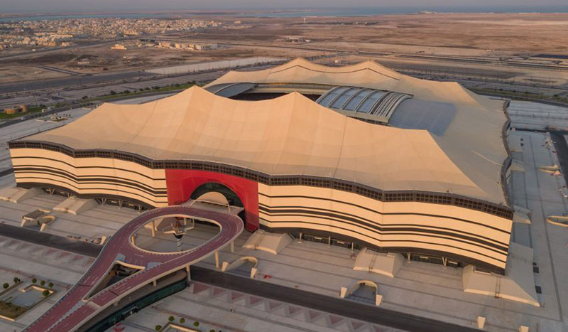

الأستادات:
استاد الجنوب
استاد الجنوب هو ملعب متعدد الاستخدامات يقع في مدينة الوكرة القطرية، من تصميم المصممة العراقية زها حديد،
يتّسع لـ40،000 متفرّج، وقد تمّ تشييده من أجل استضافة مباريات دور المجموعات ودور الستة عشر والدور ربع
النهائي
ضمن بطولة كأس العالم 2022.
استاد لوسيل
استاد لوسيل كأس العالم، هو ملعب كرة قدم، أُنشئ عام 2021 في لوسيل في دولة قطر، وهو أكبر الملاعب في دولة قطر
حيث يتسع لثمانين ألف متفرج، وأُنشئ لإستضافة مباريات كأس العالم 2022 والمباراة النهائية.

استاد البيت
استاد البيت هو ملعب كرة قدم في مدينة الخور في قطر، يتميز بسقفه القابل للسحب وتصميمه المستلهم من الخيمة
البدوية العربية التقليدية، من المُقرر استخدامه في مُباريات كأس العالم لكرة القدم 2022 .

استاد 974
استاد 974 أو كما كان يعرف سابقاً استاد رأس أبو عبود هو ملعب كرة قدم في مدينة الدوحة في دولة قطر، يتسع
لـ40,000 متفرج، افتتح في 30 نوفمبر 2021.

استاد المدينة التعليمية
استاد المدينة التعليمية هو ملعب كرة قدم يقع في الريان، قطر، بُني لاستضافة بطولة كأس العالم لكرة القدم 2022
التي ستقام في قطر. يقع الملعب داخل الحرم الجامعي في المدينة التعليمية التابعة لمؤسسة قطر. بعد نهائيات كأس
العالم لكرة القدم، سيحتفظ الاستاد بـ 25 ألف مقعد لاستخدامها من قِبل الفرق الرياضية الجامعية.